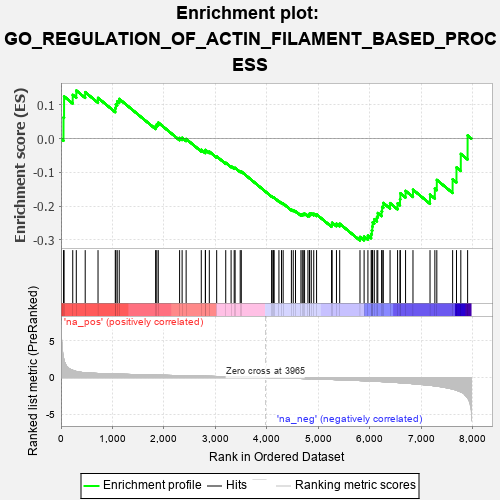

| | | Dataset | 7d |
| Phenotype | NoPhenotypeAvailable |
| Upregulated in class | na_neg |
| GeneSet | GO_REGULATION_OF_ACTIN_FILAMENT_BASED_PROCESS |
| Enrichment Score (ES) | -0.3020744 |
| Normalized Enrichment Score (NES) | -0.935687 |
| Nominal p-value | 0.57852197 |
| FDR q-value | 0.9176295 |
| FWER p-Value | 1.0 |
Table: GSEA Results Summary

Fig 1: Enrichment plot: GO_REGULATION_OF_ACTIN_FILAMENT_BASED_PROCESS
Profile of the Running ES Score & Positions of GeneSet Members on the Rank Ordered List
| PROBE | GENE SYMBOL | GENE_TITLE | RANK IN GENE LIST | RANK METRIC SCORE | RUNNING ES | CORE ENRICHMENT | | 1 | TGFB3 | | | 49 | 2.654 | 0.0629 | No |
| 2 | RAC2 | | | 60 | 2.442 | 0.1252 | No |
| 3 | RHOH | | | 228 | 0.987 | 0.1298 | No |
| 4 | FSCN1 | | | 297 | 0.830 | 0.1427 | No |
| 5 | LRP1 | | | 470 | 0.648 | 0.1378 | No |
| 6 | ID1 | | | 719 | 0.555 | 0.1209 | No |
| 7 | MEF2C | | | 1054 | 0.473 | 0.0909 | No |
| 8 | FZD10 | | | 1065 | 0.470 | 0.1019 | No |
| 9 | CDK10 | | | 1092 | 0.465 | 0.1107 | No |
| 10 | NCK2 | | | 1131 | 0.458 | 0.1178 | No |
| 11 | GATA4 | | | 1837 | 0.330 | 0.0371 | No |
| 12 | SMAD4 | | | 1860 | 0.326 | 0.0428 | No |
| 13 | PAK3 | | | 1889 | 0.322 | 0.0476 | No |
| 14 | WASF1 | | | 2303 | 0.259 | 0.0021 | No |
| 15 | BCAS3 | | | 2352 | 0.253 | 0.0026 | No |
| 16 | MET | | | 2430 | 0.240 | -0.0009 | No |
| 17 | SLIT2 | | | 2724 | 0.195 | -0.0330 | No |
| 18 | FER | | | 2803 | 0.183 | -0.0381 | No |
| 19 | BRK1 | | | 2805 | 0.183 | -0.0335 | No |
| 20 | DAPK3 | | | 2880 | 0.169 | -0.0384 | No |
| 21 | WNT4 | | | 3023 | 0.146 | -0.0526 | No |
| 22 | TWF1 | | | 3199 | 0.123 | -0.0716 | No |
| 23 | SMAD3 | | | 3303 | 0.105 | -0.0819 | No |
| 24 | FMN1 | | | 3363 | 0.095 | -0.0869 | No |
| 25 | GMFB | | | 3381 | 0.091 | -0.0867 | No |
| 26 | CDK5 | | | 3480 | 0.080 | -0.0970 | No |
| 27 | FES | | | 3501 | 0.077 | -0.0975 | No |
| 28 | PDE4B | | | 4089 | -0.022 | -0.1713 | No |
| 29 | MTOR | | | 4114 | -0.025 | -0.1737 | No |
| 30 | ABL1 | | | 4125 | -0.027 | -0.1743 | No |
| 31 | CRK | | | 4139 | -0.031 | -0.1751 | No |
| 32 | ARPC2 | | | 4232 | -0.047 | -0.1855 | No |
| 33 | WNT11 | | | 4282 | -0.056 | -0.1903 | No |
| 34 | BAG4 | | | 4314 | -0.061 | -0.1926 | No |
| 35 | EPS8 | | | 4474 | -0.088 | -0.2104 | No |
| 36 | ILK | | | 4510 | -0.096 | -0.2124 | No |
| 37 | ABI2 | | | 4554 | -0.106 | -0.2151 | No |
| 38 | ARPC3 | | | 4659 | -0.129 | -0.2249 | No |
| 39 | LIMK1 | | | 4684 | -0.136 | -0.2244 | No |
| 40 | ARF6 | | | 4704 | -0.140 | -0.2231 | No |
| 41 | WASF3 | | | 4730 | -0.145 | -0.2225 | No |
| 42 | FLII | | | 4795 | -0.156 | -0.2266 | No |
| 43 | WDR1 | | | 4824 | -0.163 | -0.2259 | No |
| 44 | CNN2 | | | 4828 | -0.163 | -0.2220 | No |
| 45 | DLG1 | | | 4860 | -0.169 | -0.2215 | No |
| 46 | CAPZB | | | 4908 | -0.179 | -0.2228 | No |
| 47 | ARAP1 | | | 4963 | -0.191 | -0.2247 | No |
| 48 | SSH1 | | | 5254 | -0.258 | -0.2547 | No |
| 49 | PICK1 | | | 5265 | -0.263 | -0.2491 | No |
| 50 | EPHA1 | | | 5349 | -0.285 | -0.2522 | No |
| 51 | LATS1 | | | 5412 | -0.298 | -0.2523 | No |
| 52 | BBS4 | | | 5806 | -0.407 | -0.2915 | Yes |
| 53 | ARPC4 | | | 5886 | -0.430 | -0.2903 | Yes |
| 54 | ACTN2 | | | 5960 | -0.458 | -0.2876 | Yes |
| 55 | JMY | | | 6023 | -0.479 | -0.2830 | Yes |
| 56 | RAC1 | | | 6036 | -0.484 | -0.2719 | Yes |
| 57 | ADD2 | | | 6046 | -0.487 | -0.2603 | Yes |
| 58 | EVL | | | 6052 | -0.490 | -0.2482 | Yes |
| 59 | DBNL | | | 6084 | -0.501 | -0.2391 | Yes |
| 60 | GBA2 | | | 6136 | -0.515 | -0.2322 | Yes |
| 61 | ROCK1 | | | 6152 | -0.520 | -0.2205 | Yes |
| 62 | TPM1 | | | 6226 | -0.545 | -0.2156 | Yes |
| 63 | CDC42 | | | 6236 | -0.548 | -0.2025 | Yes |
| 64 | SVIL | | | 6259 | -0.558 | -0.1907 | Yes |
| 65 | TRPM4 | | | 6390 | -0.612 | -0.1913 | Yes |
| 66 | KANK1 | | | 6536 | -0.678 | -0.1920 | Yes |
| 67 | ARF1 | | | 6583 | -0.701 | -0.1795 | Yes |
| 68 | ALMS1 | | | 6590 | -0.704 | -0.1620 | Yes |
| 69 | PAK1 | | | 6691 | -0.757 | -0.1549 | Yes |
| 70 | FHOD3 | | | 6835 | -0.834 | -0.1513 | Yes |
| 71 | COTL1 | | | 7166 | -1.046 | -0.1659 | Yes |
| 72 | HCN4 | | | 7260 | -1.134 | -0.1482 | Yes |
| 73 | ANK2 | | | 7298 | -1.170 | -0.1224 | Yes |
| 74 | KANK3 | | | 7605 | -1.559 | -0.1205 | Yes |
| 75 | TRPM2 | | | 7680 | -1.712 | -0.0853 | Yes |
| 76 | PDE4D | | | 7764 | -1.944 | -0.0452 | Yes |
| 77 | CAV3 | | | 7896 | -2.739 | 0.0095 | Yes |
Table: GSEA details [plain text format]
Fig 2: GO_REGULATION_OF_ACTIN_FILAMENT_BASED_PROCESS: Random ES distribution
Gene set null distribution of ES for GO_REGULATION_OF_ACTIN_FILAMENT_BASED_PROCESS